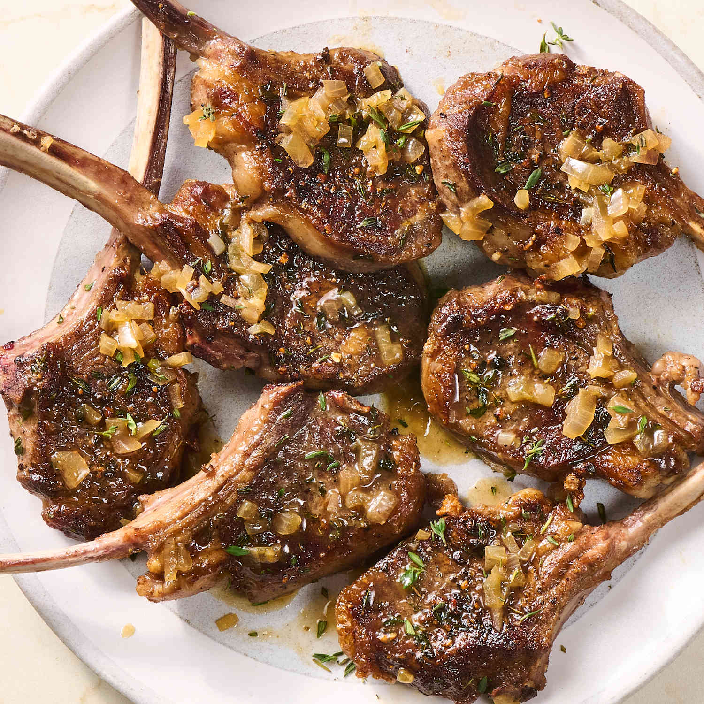

Lamb chops are a tender, premium cut of meat taken perpendicular to the spine of the lamb, usually featuring a distinct, rib-bone handle attached to an exceptionally succulent morsel of loin or rib meat. Celebrated for their rich, distinctively savory flavor profile, these individual chops are best cooked quickly over high heat—such as searing in a cast-iron skillet or grilling over an open flame—to create a caramelized crust while keeping the inside juicy and medium-rare. Often seasoned with robust aromatics like garlic, rosemary, and thyme, they offer an elegant yet deeply satisfying centerpiece for both weeknight dinners and special occasions.